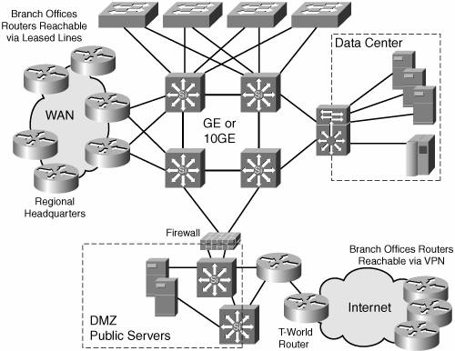

AC Network EnvironmentToday, the AC intranet covers more than 60 locations worldwide, from small branch offices with fewer than 10 people to large sites for the main and regional headquarters. One of the IT department's objectives is to standardize and reduce the variety of technologies, equipment, and architecture deployed globally (because management and operations are mostly remote). The life span for networking hardware is around three to five years. Support was a key factor in the selection and partnership with T-World provider, which offers a strong presence worldwide. AC Network InfrastructureFor years, LAN switching and Ethernet technologiesfrom 10 Mbps to 10 Gbpshave been selected and deployed by AC at the company headquarters. More recently, IEEE 802.11 (WiFi) was added to the headquarters, and it is an ongoing deployment in smaller branch offices. In the early 1990s, IPv4 became the de facto protocol on the AC network, replacing DECnet and IPX. A Class B address is registered through the Registry, but private address space is also used for services such as recently deployed IP telephony. Class B addressing and private address space were basically defined with a subnet mask of 255.255.255.0, enabling 254 hosts per subnet. IPv4 address assignment is not really structured for aggregation, because of the new locations and acquisitions happening over years. On routers and switches, the AC IT team certified a set of IP protocols and services that are relevant to its intranet and must be validated on every configuration where it makes sense. Deviation from those must clearly be explained and documented. Other features may be locally implemented when required.
The next sections describe the generic topology and differences between an AC headquarters site and a branch office. HeadquartersAlthough the 12 headquartersmain and regionalare different with respect to their location, number of users, size of the campus and data center, bandwidth, and external connectivity, their infrastructure tends to follow the same design rules. The campus consists of core layer 3 switchesCisco Catalyst 6500 serieswhich aggregate stackable switches configured as layer 2 or layer 3 switches, such as Cisco Catalyst 3550 and 3750 series (depending on their intended role). The backbone technology is actually Gigabit Ethernet, but two locations have already been upgraded to 10 Gigabit Ethernet. Each region connects to the Internet through a peering with T-World to ensure the best regional access. This requires a demilitarized zone (DMZ) to be set on each of these campuses. Deployed routers are either Cisco 7200 or, more recently, Cisco 7600 series (which replace the old Cisco 7500 series). WAN access connectivity evolves rapidly because technology and pricing are regularly debated and negotiated between AC and T-World. Previously based on OC-3 ATM or SONET/SDH access, they evolved to Gigabit Ethernet. Figure 15-2 shows an overview of an AC headquarters infrastructure. Areas such as the data center, DMZ, Internet peering, and the intranet WAN are identified. Figure 15-2. AC Headquarters Network Branch OfficesThe network of small branch offices is made of a couple stackable LAN switches, such as Cisco Catalyst 3550 and 3750 series. Wide-area connectivity is typically done through the Cisco 1700 or 2600 series, with a planned evolution to Cisco 1800 and 2800 series. Depending on the branch location and size, the connection to the nearest regional headquarters is either achieved through leased lines configured with PPP or through broadband accessdepending on its aggressive price point in many countriestaking advantage of the latest VPN technology. The sites reachable via a broadband connection get an IPv4 static address from the local ISP and then are set up with private addresses behind Network Address Translation (NAT). There is no direct IA from a branch office, because security is enforced from the headquarters. Cisco EIGRP is the routing protocol configured between headquarters and branch offices. The offices linked through a VPN tunnel over their broadband access just have a static route configure toward the IPsec tunnel. |